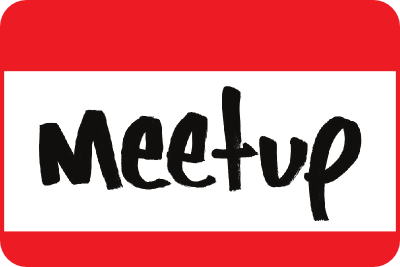

A Little Help From Our Friends
If you get more than your money's worth at nescala, it's thanks to these guys.
Typesafe is hiring professionals to record the talks.

Microsoft provided the conference space in their New England Research & Development Center.
Meetup made our stylish yet functional tote bags.

Heroku will take you into a happy hour cloud on Friday.
Foursquare is checking you in to free drinks on Saturday night.